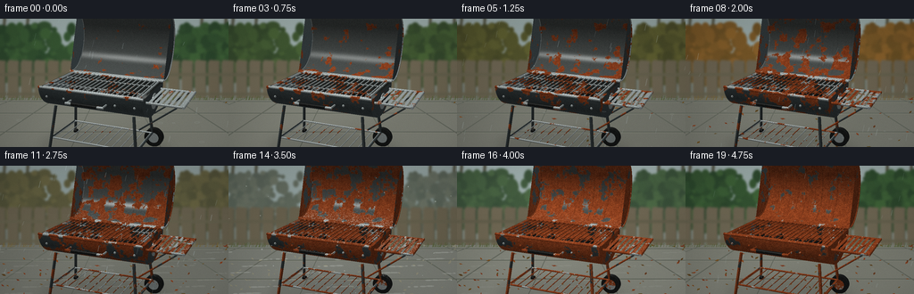
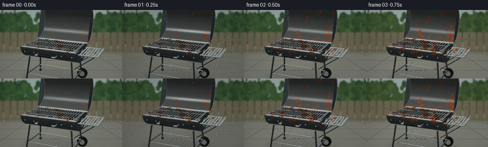

CODING AGENTS AS PIXEL WORLD MODELS
traex/GPT-6.1-Sol · material_0047
点击播放 · 原生 RGB 像素
逐轮保存的候选
回放视频、检查图与代码变化。
每份候选均可单独播放。实际图片检查记录在下方工具轨迹中。
候选 01播放与检查图
点击播放 · 原生 RGB 像素


展开代码变化
--- 上一保存版本
+++ 本次保存版本
@@ -0,0 +1,339 @@
+import numpy as np
+from PIL import Image, ImageDraw, ImageFilter
+from pathlib import Path
+from scipy.ndimage import gaussian_filter
+import artifact_io
+
+ROOT=Path(__file__).resolve().parent
+W,H=256,144
+S=3
+WW,HH=W*S,H*S
+rng=np.random.default_rng(415)
+# Perspective camera, fixed for the entire multi-season exposure.
+cam=np.array([2.8,-6.2,3.25]); target=np.array([.18,.13,1.20])
+fwd=target-cam; fwd/=np.linalg.norm(fwd)
+right=np.cross(fwd,[0,0,1]); right/=np.linalg.norm(right)
+up=np.cross(right,fwd)
+focal=440*S
+
+def project(p):
+ p=np.asarray(p); q=p-cam
+ z=q@fwd
+ return np.stack([WW*.5+focal*(q@right)/z,HH*.535-focal*(q@up)/z,z],axis=-1)
+
+zbuf=np.full((HH,WW),1.e5,np.float32)
+pos=np.zeros((HH,WW,3),np.float32)
+norm=np.zeros_like(pos)
+mat=np.zeros((HH,WW),np.int16)
+
+def tri(v,n,m):
+ v=np.array(v,float); n=np.array(n,float)
+ q=project(v)
+ xmin=max(0,int(np.floor(q[:,0].min()))); xmax=min(WW-1,int(np.ceil(q[:,0].max())))
+ ymin=max(0,int(np.floor(q[:,1].min()))); ymax=min(HH-1,int(np.ceil(q[:,1].max())))
+ if xmin>xmax or ymin>ymax:return
+ yy,xx=np.mgrid[ymin:ymax+1,xmin:xmax+1]; xx=xx+.5; yy=yy+.5
+ a,b,c=q
+ den=(b[1]-c[1])*(a[0]-c[0])+(c[0]-b[0])*(a[1]-c[1])
+ if abs(den)<1e-6:return
+ u=((b[1]-c[1])*(xx-c[0])+(c[0]-b[0])*(yy-c[1]))/den
+ v1=((c[1]-a[1])*(xx-c[0])+(a[0]-c[0])*(yy-c[1]))/den
+ w=1-u-v1
+ inv=u/a[2]+v1/b[2]+w/c[2]
+ depth=1/np.maximum(inv,1e-8)
+ mask=(u>=0)&(v1>=0)&(w>=0)&(depth<zbuf[ymin:ymax+1,xmin:xmax+1])
+ if not np.any(mask):return
+ weights=np.stack([u/a[2],v1/b[2],w/c[2]],axis=-1)*depth[...,None]
+ pp=weights@v; nn=weights@n
+ sl=np.s_[ymin:ymax+1,xmin:xmax+1]
+ zbuf[sl][mask]=depth[mask]; pos[sl][mask]=pp[mask]; norm[sl][mask]=nn[mask]; mat[sl][mask]=m
+
+def quad(v,n,m):
+ tri([v[0],v[1],v[2]],[n[0],n[1],n[2]],m)
+ tri([v[0],v[2],v[3]],[n[0],n[2],n[3]],m)
+
+def cylinder(a,b,r,m,segments=12):
+ a=np.array(a,float); b=np.array(b,float); d=b-a; d/=np.linalg.norm(d)
+ helper=np.array([0,0,1.]) if abs(d[2])<.9 else np.array([1.,0,0])
+ u=np.cross(d,helper); u/=np.linalg.norm(u); vv=np.cross(d,u)
+ ns=[u*np.cos(t)+vv*np.sin(t) for t in np.linspace(0,2*np.pi,segments,endpoint=False)]
+ for i in range(segments):
+ j=(i+1)%segments
+ quad([a+r*ns[i],b+r*ns[i],b+r*ns[j],a+r*ns[j]], [ns[i],ns[i],ns[j],ns[j]],m)
+ tri([a,a+r*ns[j],a+r*ns[i]],[-d]*3,m)
+ tri([b,b+r*ns[i],b+r*ns[j]],[d]*3,m)
+
+def sphere(c,r,m,seg=12,rings=7):
+ c=np.array(c)
+ for j in range(rings):
+ for i in range(seg):
+ ts=[np.pi*j/rings,np.pi*(j+1)/rings]; ps=[2*np.pi*i/seg,2*np.pi*(i+1)/seg]
+ ns=[np.array([np.sin(t)*np.cos(p),np.sin(t)*np.sin(p),np.cos(t)]) for t,p in [(ts[0],ps[0]),(ts[1],ps[0]),(ts[1],ps[1]),(ts[0],ps[1])]]
+ quad([c+r*n for n in ns],ns,m)
+
+# Dark tubular cart, wire storage shelf, and two real rubber wheels.
+for x in [-.75,.75]:
+ for y in [-.39,.39]:
+ cylinder((x,y,.89),(x*1.13,y*1.3,.10),.027,1)
+for y in [-.45,.45]:
+ cylinder((-.83,y,.28),(.83,y,.28),.016,2)
+for x in np.linspace(-.8,.8,12):cylinder((x,-.45,.28),(x,.45,.28),.008,2,8)
+for x in [-.83,.83]:cylinder((x,-.46,.28),(x,.46,.28),.016,1)
+for y in [-.51,.51]:
+ cylinder((.85,y-.052,.18),(.85,y+.052,.18),.18,5,36)
+ cylinder((.85,y-.055,.18),(.85,y+.056,.18),.104,2,24)
+ cylinder((.85,y-.061,.18),(.85,y+.062,.18),.033,2,16)
+# Ground feet.
+for y in [-.5,.5]:cylinder((-.87,y,.04),(-.80,y,.04),.041,5)
+
+# Half-barrel firebox. Continuous smooth normals preserve the rolled sheet curvature.
+R=.60; D=.45; Z=1.27
+angles=np.linspace(0,np.pi,56)
+for m,rr,dd in [(1,R,D),(3,R-.019,D-.022)]:
+ for a,b in zip(angles[:-1],angles[1:]):
+ nn=[np.array([0,-np.cos(t),-np.sin(t)])*(1 if m==1 else -1) for t in [a,b]]
+ vv=[[-.96,-rr*np.cos(a),Z-dd*np.sin(a)],[.96,-rr*np.cos(a),Z-dd*np.sin(a)],[.96,-rr*np.cos(b),Z-dd*np.sin(b)],[-.96,-rr*np.cos(b),Z-dd*np.sin(b)]]
+ quad(vv,[nn[0],nn[0],nn[1],nn[1]],m)
+for x in [-.965,.965]:
+ for a,b in zip(angles[:-1],angles[1:]):
+ n=[np.sign(x),0,0]
+ tri([[x,0,Z],[x,-R*np.cos(a),Z-D*np.sin(a)],[x,-R*np.cos(b),Z-D*np.sin(b)]],[n]*3,1)
+# charcoal: irregular matte stones and pale ash, beneath the cooking grid.
+for i in range(66):
+ x=rng.uniform(-.83,.83); y=rng.uniform(-.40,.40)
+ z=.945+.1*(abs(y)/.4)**2
+ sphere((x,y,z),rng.uniform(.043,.083),4,8,5)
+# Lid rotated about its rear hinge: open and left outdoors.
+angle=-np.deg2rad(108)
+rot=np.array([[1,0,0],[0,np.cos(angle),-np.sin(angle)],[0,np.sin(angle),np.cos(angle)]])
+hinge=np.array([0,R,Z+.025])
+def lidpoint(x,t):
+ closed=np.array([x,-R*np.cos(t),Z+.025+D*np.sin(t)])
+ return hinge+rot@(closed-hinge)
+for a,b in zip(angles[:-1],angles[1:]):
+ na=rot@np.array([0,np.cos(a),-np.sin(a)])
+ nb=rot@np.array([0,np.cos(b),-np.sin(b)])
+ quad([lidpoint(-.97,a),lidpoint(.97,a),lidpoint(.97,b),lidpoint(-.97,b)],[na,na,nb,nb],6)
+for x in [-.976,.976]:
+ for a,b in zip(angles[:-1],angles[1:]):
+ tri([hinge+[x,0,0],lidpoint(x,a),lidpoint(x,b)],[[np.sign(x),0,0]]*3,1)
+for t in [0,np.pi]:cylinder(lidpoint(-.98,t),lidpoint(.98,t),.018,2)
+for x in [-.98,.98]:
+ for a,b in zip(angles[:-1],angles[1:]):cylinder(lidpoint(x,a),lidpoint(x,b),.014,2,8)
+# Black stay-cool lid grip just above the upper edge.
+a=lidpoint(-.30,0); b=lidpoint(.30,0)
+for x in [-.28,.28]:
+ base=lidpoint(x,0); cylinder(base,base+np.array([0,-.045,.095]),.015,2)
+cylinder(a+[0,-.045,.095],b+[0,-.045,.095],.035,5,20)
+# Bright rim and parallel cooking bars, the most legible corrosion target.
+for y in [-.585,.585]:cylinder((-.97,y,Z+.007),(.97,y,Z+.007),.022,2,16)
+for x in [-.895,.895]:cylinder((x,-.535,Z+.008),(x,.535,Z+.008),.018,2)
+for y in [-.535,.535]:cylinder((-.895,y,Z+.008),(.895,y,Z+.008),.018,2)
+for x in np.linspace(-.85,.85,20):cylinder((x,-.53,Z+.017),(x,.53,Z+.017),.011,2,12)
+for y in [-.25,.25]:cylinder((-.86,y,Z-.010),(.86,y,Z-.010),.009,2,8)
+# Front handle, standoffs, rivets and a vent plate.
+for x in [-.33,.33]:cylinder((x,-.58,1.105),(x,-.745,1.105),.017,2)
+cylinder((-.35,-.745,1.105),(.35,-.745,1.105),.023,2)
+cylinder((-.235,-.745,1.105),(.235,-.745,1.105),.031,5)
+for x in [-.82,-.48,.48,.82]:sphere((x,-.565,1.11),.023,2,10,6)
+# Side air-control disk and little slit openings.
+cylinder((.974,0,1.08),(.989,0,1.08),.14,2,32)
+for y in [-.065,0,.065]:cylinder((.996,y,1.035),(.996,y,1.125),.013,4,8)
+sphere((1.004,0,1.08),.022,2)
+# Small steel side shelf, matching period charcoal-barbecue silhouette.
+for y in [-.43,.43]:
+ cylinder((.97,y,1.18),(1.56,y,1.18),.022,2)
+ cylinder((1.48,y,1.16),(.86,y,.69),.014,1)
+for x in np.linspace(1.03,1.55,7):
+ v=[[x-.026,-.46,1.194],[x+.026,-.46,1.194],[x+.026,.46,1.194],[x-.026,.46,1.194]]
+ quad(v,[[0,0,1]]*4,2)
+cylinder((1.59,-.46,1.18),(1.59,.46,1.18),.022,2)
+
+visible=mat>0
+norm/=np.maximum(np.linalg.norm(norm,axis=-1,keepdims=True),1e-6)
+# Deterministic multi-scale solid texture remains attached to every curved surface.
+def noise3(p,scale,seed=0):
+ q=p*scale+np.array([13.3,31.1,5.7]); cell=np.floor(q); f=q-cell; f=f*f*(3-2*f)
+ out=np.zeros(p.shape[:-1])
+ for i in [0,1]:
+ for j in [0,1]:
+ for k in [0,1]:
+ c=cell+np.array([i,j,k])
+ h=np.sin(c[...,0]*127.1+c[...,1]*311.7+c[...,2]*74.7+seed*17.1)*43758.5453
+ h=h-np.floor(h)
+ out+=h*(f[...,0] if i else 1-f[...,0])*(f[...,1] if j else 1-f[...,1])*(f[...,2] if k else 1-f[...,2])
+ return out
+p=pos[visible]; n=norm[visible]; ids=mat[visible]
+coarse=noise3(p,6.5,1); med=noise3(p,21,3); fine=noise3(p,85,5); grain=noise3(p,285,6)
+field=.57*coarse+.28*med+.15*fine
+# Seams and places where water pools oxidize earlier.
+edge=np.exp(-((p[:,2]-1.26)/.065)**2)*.065
+field=field-edge-.025*(p[:,2]<.7)
+view=cam-p; view/=np.linalg.norm(view,axis=-1,keepdims=True)
+base_palette=np.array([[0,0,0],[49,56,57],[143,151,150],[31,34,32],[27,26,24],[22,23,22],[69,73,71]],float)
+
+# A softly out-of-focus real garden: fence, seasonal foliage, and stone paving.
+bgrng=np.random.default_rng(244)
+plants=[]
+for i in range(900):
+ x=bgrng.uniform(-10,266); y=bgrng.uniform(8,69)
+ if 53<x<201 and y<40 and bgrng.random()<.82:continue
+ plants.append((x,y,bgrng.uniform(1.4,8),bgrng.uniform(.6,1.6),bgrng.random()))
+fallen=[(bgrng.uniform(0,256),bgrng.uniform(88,144),bgrng.uniform(1,3),bgrng.uniform(0,np.pi)) for i in range(110)]
+
+def background(t,wet):
+ # spring -> autumn -> winter -> next humid spring
+ autumn=np.exp(-((t-.43)/.19)**2); winter=np.exp(-((t-.70)/.12)**2)
+ yy,xx=np.mgrid[0:HH,0:WW]
+ sky=np.array([169,186,184])*(1-.20*wet)
+ arr=np.broadcast_to(sky,(HH,WW,3)).copy()
+ arr+=((yy/HH)*-20)[...,None]
+ im=Image.fromarray(np.uint8(np.clip(arr,0,255)))
+ d=ImageDraw.Draw(im)
+ # Distant dark tree trunks, blurred foliage silhouettes.
+ for x in [5,31,226,253]:
+ d.line([(x*S,0),((x-4)*S,76*S)],fill=(78,77,61),width=3*S)
+ d.line([(x*S,34*S),((x+18)*S,11*S)],fill=(84,80,64),width=2*S)
+ for x,y,r,aspect,c in plants:
+ green=np.array([46+20*c,74+29*c,47+12*c])
+ gold=np.array([112+35*c,84+20*c,39+8*c])
+ bare=np.array([113+21*c,119+14*c,114+15*c])
+ col=green*(1-autumn)+gold*autumn
+ col=col*(1-winter*.8)+bare*winter*.8
+ col*=1-.16*wet
+ if winter>.3:r*=1-.28*winter
+ d.ellipse(((x-r)*S,(y-r*aspect)*S,(x+r)*S,(y+r*aspect)*S),fill=tuple(col.astype(int)))
+ # Weathered wooden fence with upright pickets and horizontal rails.
+ for i in range(19):
+ x=i*15-7; off=(i%4)*1.2
+ base=np.array([111+off,103+off,83+off])*(1-.13*wet)
+ d.polygon([(x*S,49*S),((x+2)*S,46*S),((x+13)*S,47*S),((x+13)*S,91*S),(x*S,91*S)],fill=tuple(base.astype(int)))
+ d.line([((x+13)*S,50*S),((x+13)*S,91*S)],fill=(73,77,61),width=1*S)
+ for k in [3,6,9]:d.line([((x+k)*S,54*S),((x+k-.6)*S,87*S)],fill=(104,98,79),width=1)
+ for y in [61,83]:
+ d.rectangle((0,y*S,WW,(y+3)*S),fill=(98,94,75))
+ im=im.filter(ImageFilter.GaussianBlur(1.15*S))
+ # Perspective flagstone terrace below the fence.
+ arr=np.array(im).astype(float)
+ patio=yy>=89*S
+ ns=bgrng.normal(0,1.25,(HH,WW))
+ ground=np.array([128,130,119])*(1-.21*wet)+np.array([7,8,10])*winter
+ val=3*np.sin(xx/100+yy/63)+ns+(yy/HH)*7
+ arr[patio]=ground+val[patio,None]
+ im=Image.fromarray(np.uint8(np.clip(arr,0,255)));d=ImageDraw.Draw(im)
+ for y in [93,106,127,157]:
+ d.line([(0,y*S),(WW,y*S)],fill=(99,104,95),width=1*S)
+ d.line([(0,(y+.8)*S),(WW,(y+.8)*S)],fill=(145,145,130),width=1)
+ for x in [-120,-20,80,180,280,380]:
+ d.line([((128+(x-128)*.44)*S,89*S),(x*S,144*S)],fill=(101,105,95),width=1*S)
+ # Thin grassy fringe beneath the fence.
+ for i in range(290):
+ x=bgrng.uniform(0,256); h=bgrng.uniform(1,5)
+ col=(83,95,57) if autumn<.5 else (115,100,58)
+ d.line([(x*S,91*S),((x+.9)*S,(91-h)*S)],fill=col,width=1)
+ # Windblown leaves collect across the seasons; winter brings a little ground frost.
+ for i,(x,y,r,a) in enumerate(fallen):
+ amount=np.clip((t-.23)*2.6,0,1)
+ if i/len(fallen)>amount:continue
+ color=(112+int(25*np.sin(i)),67+int(12*np.cos(i)),31)
+ if winter>.4:color=(141,139,119)
+ dx=r*np.cos(a);dy=r*.5*np.sin(a)
+ d.polygon([((x-dx)*S,(y-dy)*S),((x-dy*.7)*S,(y+dx*.3)*S),((x+dx)*S,(y+dy)*S),((x+dy*.7)*S,(y-dx*.3)*S)],fill=color)
+ if winter>.2:
+ frost=Image.new('RGBA',(WW,HH));fd=ImageDraw.Draw(frost)
+ for i in range(90):
+ x=(i*61.32)%256;y=90+(i*7.7)%54
+ rr=(1.5+(i%5))
+ fd.ellipse(((x-rr)*S,(y-.45)*S,(x+rr)*S,(y+.65)*S),fill=(215,220,214,int(70*winter)))
+ im=Image.alpha_composite(im.convert('RGBA'),frost).convert('RGB')
+ return im,autumn,winter
+
+# Contact shadow raster, defined by projected ground geometry, with natural soft penumbra.
+shadow=Image.new('L',(WW,HH)); sd=ImageDraw.Draw(shadow)
+for off in np.linspace(.0,.30,13):
+ points=[]
+ for a in np.linspace(0,2*np.pi,70):
+ q=project([.15+(1.15+off)*np.cos(a),(.52+off)*np.sin(a),.006])
+ points.append((q[0],q[1]))
+ sd.polygon(points,fill=int(92*(1-off/.5)))
+shadow=np.array(shadow.filter(ImageFilter.GaussianBlur(4*S)))/255
+
+frames=[]
+for frame in range(20):
+ t=frame/19
+ wet=float(np.clip(.38+.42*np.sin(frame*1.8)+.24*np.sin(frame*.61),0,1))
+ bg,autumn,winter=background(t,wet)
+ canvas=np.array(bg,dtype=float)
+ canvas*=1-shadow[...,None]*.53
+ light=np.array([-.55,-.65,1.4]);light/=np.linalg.norm(light)
+ diffuse=np.maximum(n@light,0)
+ ndv=np.clip(np.sum(n*view,axis=-1),0,1)
+ refl=2*(n@light)[:,None]*n-light
+ spec=np.maximum(np.sum(refl*view,axis=-1),0)**(32+wet*33)
+ # A broad sky reflection and narrow steel glints model damp metal without plastic gloss.
+ illum=.49+.53*diffuse+.06*np.maximum(n[:,2],0)
+ clean=base_palette[ids]*illum[:,None]
+ clean+=(.11*(1-ndv)**3+.025)[:,None]*np.array([134,155,166])
+ clean+=(grain[:,None]-.5)*8+(fine[:,None]-.5)*9
+ clean+=spec[:,None]*(np.where(ids==2,105,42)+wet*80)[:,None]
+ # Corrosion expands from fixed microscopic flaws, rather than flickering textures.
+ threshold=.245+.445*(t**.84)
+ susceptibility=np.where(ids==2,.99,np.where(ids==6,1.0,1.04))
+ rust=np.clip((threshold-field*susceptibility)/.025,0,1) # lower-field sites start first
+ rust*=np.isin(ids,[1,2,3,6])
+ border=np.exp(-((field*susceptibility-threshold)/.037)**2)
+ rusty=np.stack([116+fine*48+med*26,49+fine*26+med*16,23+fine*13+med*9],axis=-1)
+ rusty+=(border[:,None])*np.array([30,17,6])
+ rusty*=illum[:,None]*(1-.15*wet)
+ rusty+=(grain[:,None]-.5)*20
+ # Dark pits and small lifting flakes add roughness at advanced exposure.
+ pits=np.clip((.33-grain)*4,0,1)*t
+ rusty*=1-pits[:,None]*.44
+ rusty+=np.maximum(grain-.80,0)[:,None]*np.array([90,49,16])*t
+ colors=clean*(1-rust[:,None])+rusty*rust[:,None]
+ colors[ids==4]*=.85
+ # Rubber remains rubber; oxidation belongs only to the metal.
+ # Frost delicately catches exposed horizontal edges during winter.
+ frost=winter*np.maximum(n[:,2],0)**8*np.clip((fine-.52)*3,0,.6)
+ colors=colors*(1-frost[:,None]) + np.array([214,221,218])*frost[:,None]
+ colors*=1-.085*wet
+ canvas[visible]=colors
+ # Rain-induced corrosion streaks on the hanging lid and front shell.
+ runoff=(np.sin(p[:,0]*69+np.sin(p[:,0]*16)*3)>.96)&np.isin(ids,[1,6])&(p[:,2]>1.3)
+ c=canvas[visible]; c[runoff]*=1-.14*t;canvas[visible]=c
+ im=Image.fromarray(np.uint8(np.clip(canvas,0,255)))
+ overlay=Image.new('RGBA',(WW,HH)); d=ImageDraw.Draw(overlay)
+ rrng=np.random.default_rng(810+frame)
+ if wet>.30 and winter<.8:
+ for j in range(int(65*wet)):
+ x=rrng.uniform(-8,264)*S;y=rrng.uniform(-12,144)*S
+ length=rrng.uniform(3,8)*S
+ d.line([(x,y),(x-1.5*S,y+length)],fill=(196,216,222,int(38+wet*48)),width=1 if j%3 else 2)
+ # Brief expanding raindrop rings on the wet patio.
+ for j in range(9):
+ x=rrng.uniform(0,256)*S;y=rrng.uniform(103,144)*S;r=rrng.uniform(1,3)*S
+ d.ellipse((x-r,y-r*.3,x+r,y+r*.3),outline=(189,202,201,60),width=1)
+ if winter>.65:
+ for j in range(29):
+ x=rrng.uniform(0,WW);y=rrng.uniform(0,HH);r=rrng.uniform(.3,.65)*S
+ d.ellipse((x-r,y-r,x+r,y+r),fill=(225,234,234,90))
+ # Pinpoint moisture beads on the metallic rim and horizontal shelf.
+ if wet>.25:
+ candidates=np.flatnonzero((ids==2)&(n[:,2]>.2)&(p[:,2]>1.16))
+ if len(candidates):
+ flat=np.flatnonzero(visible)
+ for ix in rrng.choice(candidates,min(32,len(candidates)),replace=False):
+ y,x=divmod(int(flat[ix]),WW)
+ d.ellipse((x-1,y-1,x+1,y+1),fill=(209,225,225,130))
+ im=Image.alpha_composite(im.convert('RGBA'),overlay).convert('RGB')
+ im=im.resize((W,H),Image.Resampling.LANCZOS)
+ # Subtle stable sensor texture, not a temporally noisy filter.
+ ar=np.array(im,float)
+ sensor=np.random.default_rng(77).normal(0,.48,(H,W,1))
+ ar+=sensor
+ # Gentle lens falloff.
+ y,x=np.mgrid[0:H,0:W];vig=1-.085*((x-128)**2/128**2+(y-72)**2/72**2)
+ ar*=vig[...,None]
+ frames.append(np.uint8(np.clip(ar,0,255)))
+artifact_io.save(np.stack(frames),ROOT)
+print('Saved',len(frames),'RGB frames,',W,'x',H)
可观测工具轨迹
实际执行的命令与返回图片。
命令 1exit 0
/bin/bash -lc 'ls -la && cat prompt.txt && cat GENERATION_RULES.md && cat task_spec.json'
命令 2exit 0
/bin/bash -lc "cat artifact_io.py && python - <<'PY' import importlib.util for m in ['numpy','PIL','scipy']: print(m, bool(importlib.util.find_spec(m))) PY"
命令 3exit 1
/bin/bash -lc "mkdir -p .tmp && cat > generate.py <<'PY'
import numpy as np
from PIL import Image, ImageDraw, ImageFilter
from pathlib import Path
from scipy.ndimage import gaussian_filter
import artifact_io
ROOT=Path(__file__).resolve().parent
W,H=256,144
S=3
WW,HH=W*S,H*S
rng=np.random.default_rng(415)
# Perspective camera, fixed for the entire multi-season exposure.
cam=np.array([2.8,-6.2,3.25]); target=np.array([.18,.13,1.20])
fwd=target-cam; fwd/=np.linalg.norm(fwd)
right=np.cross(fwd,[0,0,1]); right/=np.linalg.norm(right)
up=np.cross(right,fwd)
focal=440*S
def project(p):
p=np.asarray(p); q=p-cam
z=q@fwd
return np.stack([WW*.5+focal*(q@right)/z,HH*.535-focal*(q@up)/z,z],axis=-1)
zbuf=np.full((HH,WW),1.e5,np.float32)
pos=np.zeros((HH,WW,3),np.float32)
norm=np.zeros_like(pos)
mat=np.zeros((HH,WW),np.int16)
def tri(v,n,m):
v=np.array(v,float); n=np.array(n,float)
q=project(v)
xmin=max(0,int(np.floor(q[:,0].min()))); xmax=min(WW-1,int(np.ceil(q[:,0].max())))
ymin=max(0,int(np.floor(q[:,1].min()))); ymax=min(HH-1,int(np.ceil(q[:,1].max())))
if xmin>xmax or ymin>ymax:return
yy,xx=np.mgrid[ymin:ymax+1,xmin:xmax+1]; xx=xx+.5; yy=yy+.5
a,b,c=q
den=(b[1]-c[1])*(a[0]-c[0])+(c[0]-b[0])*(a[1]-c[1])
if abs(den)<1e-6:return
u=((b[1]-c[1])*(xx-c[0])+(c[0]-b[0])*(yy-c[1]))/den
v1=((c[1]-a[1])*(xx-c[0])+(a[0]-c[0])*(yy-c[1]))/den
w=1-u-v1
inv=u/a[2]+v1/b[2]+w/c[2]
depth=1/np.maximum(inv,1e-8)
mask=(u>=0)&(v1>=0)&(w>=0)&(depth<zbuf[ymin:ymax+1,xmin:xmax+1])
if not np.any(mask):return
weights=np.stack([u/a[2],v1/b[2],w/c[2]],axis=-1)*depth[...,None]
pp=weights@v; nn=weights@n
sl=np.s_[ymin:ymax+1,xmin:xmax+1]
zbuf[sl][mask]=depth[mask]; pos[sl][mask]=pp[mask]; norm[sl][mask]=nn[mask]; mat[sl][mask]=m
def quad(v,n,m):
tri([v[0],v[1],v[2]],[n[0],n[1],n[2]],m)
tri([v[0],v[2],v[3]],[n[0],n[2],n[3]],m)
def cylinder(a,b,r,m,segments=12):
a=np.array(a,float); b=np.array(b,float); d=b-a; d/=np.linalg.norm(d)
helper=np.array([0,0,1.]) if abs(d[2])<.9 else np.array([1.,0,0])
u=np.cross(d,helper); u/=np.linalg.norm(u); vv=np.cross(d,u)
ns=[u*np.cos(t)+vv*np.sin(t) for t in np.linspace(0,2*np.pi,segments,endpoint=False)]
for i in range(segments):
j=(i+1)%segments
quad([a+r*ns[i],b+r*ns[i],b+r*ns[j],a+r*ns[j]], [ns[i],ns[i],ns[j],ns[j]],m)
tri([a,a+r*ns[j],a+r*ns[i]],[-d]*3,m)
tri([b,b+r*ns[i],b+r*ns[j]],[d]*3,m)
def sphere(c,r,m,seg=12,rings=7):
c=np.array(c)
for j in range(rings):
for i in range(seg):
ts=[np.pi*j/rings,np.pi*(j+1)/rings]; ps=[2*np.pi*i/seg,2*np.pi*(i+1)/seg]
ns=[np.array([np.sin(t)*np.cos(p),np.sin(t)*np.sin(p),np.cos(t)]) for t,p in [(ts[0],ps[0]),(ts[1],ps[0]),(ts[1],ps[1]),(ts[0],ps[1])]]
quad([c+r*n for n in ns],ns,m)
# Dark tubular cart, wire storage shelf, and two real rubber wheels.
for x in [-.75,.75]:
for y in [-.39,.39]:
cylinder((x,y,.89),(x*1.13,y*1.3,.10),.027,1)
for y in [-.45,.45]:
cylinder((-.83,y,.28),(.83,y,.28),.016,2)
for x in np.linspace(-.8,.8,12):cylinder((x,-.45,.28),(x,.45,.28),.008,2,8)
for x in [-.83,.83]:cylinder((x,-.46,.28),(x,.46,.28),.016,1)
for y in [-.51,.51]:
cylinder((.85,y-.052,.18),(.85,y+.052,.18),.18,5,36)
cylinder((.85,y-.055,.18),(.85,y+.056,.18),.104,2,24)
cylinder((.85,y-.061,.18),(.85,y+.062,.18),.033,2,16)
# Ground feet.
for y in [-.5,.5]:cylinder((-.87,y,.04),(-.80,y,.04),.041,5)
# Half-barrel firebox. Continuous smooth normals preserve the rolled sheet curvature.
R=.60; D=.45; Z=1.27
angles=np.linspace(0,np.pi,56)
for m,rr,dd in [(1,R,D),(3,R-.019,D-.022)]:
for a,b in zip(angles[:-1],angles[1:]):
nn=[np.array([0,-np.cos(t),-np.sin(t)])*(1 if m==1 else -1) for t in [a,b]]
vv=[[-.96,-rr*np.cos(a),Z-dd*np.sin(a)],[.96,-rr*np.cos(a),Z-dd*np.sin(a)],[.96,-rr*np.cos(b),Z-dd*np.sin(b)],[-.96,-rr*np.cos(b),Z-dd*np.sin(b)]]
quad(vv,[nn[0],nn[0],nn[1],nn[1]],m)
for x in [-.965,.965]:
for a,b in zip(angles[:-1],angles[1:]):
n=[np.sign(x),0,0]
tri([[x,0,Z],[x,-R*np.cos(a),Z-D*np.sin(a)],[x,-R*np.cos(b),Z-D*np.sin(b)]],[n]*3,1)
# charcoal: irregular matte stones and pale ash, beneath the cooking grid.
for i in range(66):
x=rng.uniform(-.83,.83); y=rng.uniform(-.40,.40)
z=.945+.1*(abs(y)/.4)**2
sphere((x,y,z),rng.uniform(.043,.083),4,8,5)
# Lid rotated about its rear hinge: open and left outdoors.
angle=-np.deg2rad(108)
rot=np.array([[1,0,0],[0,np.cos(angle),-np.sin(angle)],[0,np.sin(angle),np.cos(angle)]])
hinge=np.array([0,R,Z+.025])
def lidpoint(x,t):
closed=np.array([x,-R*np.cos(t),Z+.025+D*np.sin(t)])
return hinge+rot@(closed-hinge)
for a,b in zip(angles[:-1],angles[1:]):
na=rot@np.array([0,np.cos(a),-np.sin(a)])
nb=rot@np.array([0,np.cos(b),-np.sin(b)])
quad([lidpoint(-.97,a),lidpoint(.97,a),lidpoint(.97,b),lidpoint(-.97,b)],[na,na,nb,nb],6)
for x in [-.976,.976]:
for a,b in zip(angles[:-1],angles[1:]):
tri([hinge+[x,0,0],lidpoint(x,a),lidpoint(x,b)],[[np.sign(x),0,0]]*3,1)
for t in [0,np.pi]:cylinder(lidpoint(-.98,t),lidpoint(.98,t),.018,2)
for x in [-.98,.98]:
for a,b in zip(angles[:-1],angles[1:]):cylinder(lidpoint(x,a),lidpoint(x,b),.014,2,8)
# Black stay-cool lid grip just above the upper edge.
a=lidpoint(-.30,0); b=lidpoint(.30,0)
for x in [-.28,.28]:
base=lidpoint(x,0); cylinder(base,base+np.array([0,-.045,.095]),.015,2)
cylinder(a+[0,-.045,.095],b+[0,-.045,.095],.035,5,20)
# Bright rim and parallel cooking bars, the most legible corrosion target.
for y in [-.585,.585]:cylinder((-.97,y,Z+.007),(.97,y,Z+.007),.022,2,16)
for x in [-.895,.895]:cylinder((x,-.535,Z+.008),(x,.535,Z+.008),.018,2)
for y in [-.535,.535]:cylinder((-.895,y,Z+.008),(.895,y,Z+.008),.018,2)
for x in np.linspace(-.85,.85,20):cylinder((x,-.53,Z+.017),(x,.53,Z+.017),.011,2,12)
for y in [-.25,.25]:cylinder((-.86,y,Z-.010),(.86,y,Z-.010),.009,2,8)
# Front handle, standoffs, rivets and a vent plate.
for x in [-.33,.33]:cylinder((x,-.58,1.105),(x,-.745,1.105),.017,2)
cylinder((-.35,-.745,1.105),(.35,-.745,1.105),.023,2)
cylinder((-.235,-.745,1.105),(.235,-.745,1.105),.031,5)
for x in [-.82,-.48,.48,.82]:sphere((x,-.565,1.11),.023,2,10,6)
# Side air-control disk and little slit openings.
cylinder((.974,0,1.08),(.989,0,1.08),.14,2,32)
for y in [-.065,0,.065]:cylinder((.996,y,1.035),(.996,y,1.125),.013,4,8)
sphere((1.004,0,1.08),.022,2)
# Small steel side shelf, matching period charcoal-barbecue silhouette.
for y in [-.43,.43]:
cylinder((.97,y,1.18),(1.56,y,1.18),.022,2)
cylinder((1.48,y,1.16),(.86,y,.69),.014,1)
for x in np.linspace(1.03,1.55,7):
v=[[x-.026,-.46,1.194],[x+.026,-.46,1.194],[x+.026,.46,1.194],[x-.026,.46,1.194]]
quad(v,[[0,0,1]]*4,2)
cylinder((1.59,-.46,1.18),(1.59,.46,1.18),.022,2)
visible=mat>0
norm/=np.maximum(np.linalg.norm(norm,axis=-1,keepdims=True),1e-6)
# Deterministic multi-scale solid texture remains attached to every curved surface.
def noise3(p,scale,seed=0):
q=p*scale+np.array([13.3,31.1,5.7]); cell=np.floor(q); f=q-cell; f=f*f*(3-2*f)
out=np.zeros(p.shape[:-1])
for i in [0,1]:
for j in [0,1]:
for k in [0,1]:
c=cell+np.array([i,j,k])
h=np.sin(c[...,0]*127.1+c[...,1]*311.7+c[...,2]*74.7+seed*17.1)*43758.5453
h=h-np.floor(h)
out+=h*(f[...,0] if i else 1-f[...,0])*(f[...,1] if j else 1-f[...,1])*(f[...,2] if k else 1-f[...,2])
return out
p=pos[visible]; n=norm[visible]; ids=mat[visible]
coarse=noise3(p,6.5,1); med=noise3(p,21,3); fine=noise3(p,85,5); grain=noise3(p,285,6)
field=.57*coarse+.28*med+.15*fine
# Seams and places where water pools oxidize earlier.
edge=np.exp(-((p[:,2]-1.26)/.065)**2)*.065
field=field-edge-.025*(p[:,2]<.7)
view=cam-p; view/=np.linalg.norm(view,axis=-1,keepdims=True)
base_palette=np.array([[0,0,0],[49,56,57],[143,151,150],[31,34,32],[27,26,24],[22,23,22],[69,73,71]],float)
# A softly out-of-focus real garden: fence, seasonal foliage, and stone paving.
bgrng=np.random.default_rng(244)
plants=[]
for i in range(900):
x=bgrng.uniform(-10,266); y=bgrng.uniform(8,69)
if 53<x<201 and y<40 and bgrng.random()<.82:continue
plants.append((x,y,bgrng.uniform(1.4,8),bgrng.uniform(.6,1.6),bgrng.random()))
fallen=[(bgrng.uniform(0,256),bgrng.uniform(88,144),bgrng.uniform(1,3),bgrng.uniform(0,np.pi)) for i in range(110)]
def background(t,wet):
# spring -> autumn -> winter -> next humid spring
autumn=np.exp(-((t-.43)/.19)**2); winter=np.exp(-((t-.70)/.12)**2)
yy,xx=np.mgrid[0:HH,0:WW]
sky=np.array([169,186,184])*(1-.20*wet)
arr=np.broadcast_to(sky,(HH,WW,3)).copy()
arr+=((yy/HH)*-20)[...,None]
im=Image.fromarray(np.uint8(np.clip(arr,0,255)))
d=ImageDraw.Draw(im)
# Distant dark tree trunks, blurred foliage silhouettes.
for x in [5,31,226,253]:
d.line([(x*S,0),((x-4)*S,76*S)],fill=(78,77,61),width=3*S)
d.line([(x*S,34*S),((x+18)*S,11*S)],fill=(84,80,64),width=2*S)
for x,y,r,aspect,c in plants:
green=np.array([46+20*c,74+29*c,47+12*c])
gold=np.array([112+35*c,84+20*c,39+8*c])
bare=np.array([113+21*c,119+14*c,114+15*c])
col=green*(1-autumn)+gold*autumn
col=col*(1-winter*.8)+bare*winter*.8
col*=1-.16*wet
if winter>.3:r*=1-.28*winter
d.ellipse(((x-r)*S,(y-r*aspect)*S,(x+r)*S,(y+r*aspect)*S),fill=tuple(col.astype(int)))
# Weathered wooden fence with upright pickets and horizontal rails.
for i in range(19):
x=i*15-7; off=(i%4)*1.2
base=np.array([111+off,103+off,83+off])*(1-.13*wet)
d.polygon([(x*S,49*S),((x+2)*S,46*S),((x+13)*S,47*S),((x+13)*S,91*S),(x*S,91*S)],fill=tuple(base.astype(int)))
d.line([((x+13)*S,50*S),((x+13)*S,91*S)],fill=(73,77,61),width=1*S)
for k in [3,6,9]:d.line([((x+k)*S,54*S),((x+k-.6)*S,87*S)],fill=(104,98,79),width=1)
for y in [61,83]:
d.rectangle((0,y*S,WW,(y+3)*S),fill=(98,94,75))
im=im.filter(ImageFilter.GaussianBlur(1.15*S))
# Perspective flagstone terrace below the fence.
arr=np.array(im).astype(float)
patio=yy>=89*S
ns=bgrng.normal(0,1.25,(HH,WW))
ground=np.array([128,130,119])*(1-.21*wet)+np.array([7,8,10])*winter
val=3*np.sin(xx/100+yy/63)+ns+(yy/HH)*7
arr[patio]=ground+val[patio,None]
im=Image.fromarray(np.uint8(np.clip(arr,0,255)));d=ImageDraw.Draw(im)
for y in [93,106,127,157]:
d.line([(0,y*S),(WW,y*S)],fill=(99,104,95),width=1*S)
d.line([(0,(y+.8)*S),(WW,(y+.8)*S)],fill=(145,145,130),width=1)
for x in [-120,-20,80,180,280,380]:
d.line([((128+(x-128)*.44)*S,89*S),(x*S,144*S)],fill=(101,105,95),width=1*S)
# Thin grassy fringe beneath the fence.
for i in range(290):
x=bgrng.uniform(0,256); h=bgrng.uniform(1,5)
col=(83,95,57) if autumn<.5 else (115,100,58)
d.line([(x*S,91*S),((x+.9)*S,(91-h)*S)],fill=col,width=1)
# Windblown leaves collect across the seasons; winter brings a little ground frost.
for i,(x,y,r,a) in enumerate(fallen):
amount=np.clip((t-.23)*2.6,0,1)
if i/len(fallen)>amount:continue
color=(112+int(25*np.sin(i)),67+int(12*np.cos(i)),31)
if winter>.4:color=(141,139,119)
dx=r*np.cos(a);dy=r*.5*np.sin(a)
d.polygon([((x-dx)*S,(y-dy)*S),((x-dy*.7)*S,(y+dx*.3)*S),((x+dx)*S,(y+dy)*S),((x+dy*.7)*S,(y-dx*.3)*S)],fill=color)
if winter>.2:
frost=Image.new('RGBA',(WW,HH));fd=ImageDraw.Draw(frost)
for i in range(90):
x=(i*61.32)%256;y=90+(i*7.7)%54
rr=(1.5+(i%5))
fd.ellipse(((x-rr)*S,(y-.45)*S,(x+rr)*S,(y+.65)*S),fill=(215,220,214,int(70*winter)))
im=Image.alpha_composite(im.convert('RGBA'),frost).convert('RGB')
return im,autumn,winter
# Contact shadow raster, defined by projected ground geometry, with natural soft penumbra.
shadow=Image.new('L',(WW,HH)); sd=ImageDraw.Draw(shadow)
for off in np.linspace(.0,.30,13):
points=[]
for a in np.linspace(0,2*np.pi,70):
q=project([.15+(1.15+off)*np.cos(a),(.52+off)*np.sin(a),.006])
points.append((q[0],q[1]))
sd.polygon(points,fill=int(92*(1-off/.5)))
shadow=np.array(shadow.filter(ImageFilter.GaussianBlur(4*S)))/255
frames=[]
for frame in range(20):
t=frame/19
wet=float(np.clip(.38+.42*np.sin(frame*1.8)+.24*np.sin(frame*.61),0,1))
bg,autumn,winter=background(t,wet)
canvas=np.array(bg,dtype=float)
canvas*=1-shadow[...,None]*.53
light=np.array([-.55,-.65,1.4]);light/=np.linalg.norm(light)
diffuse=np.maximum(n@light,0)
ndv=np.clip(np.sum(n*view,axis=-1),0,1)
refl=2*(n@light)[:,None]*n-light
spec=np.maximum(np.sum(refl*view,axis=-1),0)**(32+wet*33)
# A broad sky reflection and narrow steel glints model damp metal without plastic gloss.
illum=.49+.53*diffuse+.06*np.maximum(n[:,2],0)
clean=base_palette[ids]*illum[:,None]
clean+=((.11*(1-ndv)**3+.025)*np.array([134,155,166]))
clean+=(grain[:,None]-.5)*8+(fine[:,None]-.5)*9
clean+=spec[:,None]*(np.where(ids==2,105,42)+wet*80)[:,None]
# Corrosion expands from fixed microscopic flaws, rather than flickering textures.
threshold=.80-.475*(t**.84)
susceptibility=np.where(ids==2,.99,np.where(ids==6,1.0,1.04))
rust=np.clip((threshold-field*susceptibility)/-.025,0,1)
rust=np.clip((threshold-field*susceptibility)/.025,0,1) # lower-field sites start first
rust*=np.isin(ids,[1,2,3,6])
border=np.exp(-((field*susceptibility-threshold)/.037)**2)
rusty=np.stack([116+fine*48+med*26,49+fine*26+med*16,23+fine*13+med*9],axis=-1)
rusty+=(border[:,None])*np.array([30,17,6])
rusty*=illum[:,None]*(1-.15*wet)
rusty+=(grain[:,None]-.5)*20
# Dark pits and small lifting flakes add roughness at advanced exposure.
pits=np.clip((.33-grain)*4,0,1)*t
rusty*=1-pits[:,None]*.44
rusty+=np.maximum(grain-.80,0)[:,None]*np.array([90,49,16])*t
colors=clean*(1-rust[:,None])+rusty*rust[:,None]
colors[ids==4]*=.85
# Rubber remains rubber; oxidation belongs only to the metal.
# Frost delicately catches exposed horizontal edges during winter.
frost=winter*np.maximum(n[:,2],0)**8*np.clip((fine-.52)*3,0,.6)
colors=colors*(1-frost[:,None]) + np.array([214,221,218])*frost[:,None]
colors*=1-.085*wet
canvas[visible]=colors
# Rain-induced corrosion streaks on the hanging lid and front shell.
runoff=(np.sin(p[:,0]*69+np.sin(p[:,0]*16)*3)>.96)&np.isin(ids,[1,6])&(p[:,2]>1.3)
c=canvas[visible]; c[runoff]*=1-.14*t;canvas[visible]=c
im=Image.fromarray(np.uint8(np.clip(canvas,0,255)))
overlay=Image.new('RGBA',(WW,HH)); d=ImageDraw.Draw(overlay)
rrng=np.random.default_rng(810+frame)
if wet>.30 and winter<.8:
for j in range(int(65*wet)):
x=rrng.uniform(-8,264)*S;y=rrng.uniform(-12,144)*S
length=rrng.uniform(3,8)*S
d.line([(x,y),(x-1.5*S,y+length)],fill=(196,216,222,int(38+wet*48)),width=1 if j%3 else 2)
# Brief expanding raindrop rings on the wet patio.
for j in range(9):
x=rrng.uniform(0,256)*S;y=rrng.uniform(103,144)*S;r=rrng.uniform(1,3)*S
d.ellipse((x-r,y-r*.3,x+r,y+r*.3),outline=(189,202,201,60),width=1)
if winter>.65:
for j in range(29):
x=rrng.uniform(0,WW);y=rrng.uniform(0,HH);r=rrng.uniform(.3,.65)*S
d.ellipse((x-r,y-r,x+r,y+r),fill=(225,234,234,90))
# Pinpoint moisture beads on the metallic rim and horizontal shelf.
if wet>.25:
candidates=np.flatnonzero((ids==2)&(n[:,2]>.2)&(p[:,2]>1.16))
if len(candidates):
flat=np.flatnonzero(visible)
for ix in rrng.choice(candidates,min(32,len(candidates)),replace=False):
y,x=divmod(int(flat[ix]),WW)
d.ellipse((x-1,y-1,x+1,y+1),fill=(209,225,225,130))
im=Image.alpha_composite(im.convert('RGBA'),overlay).convert('RGB')
im=im.resize((W,H),Image.Resampling.LANCZOS)
# Subtle stable sensor texture, not a temporally noisy filter.
ar=np.array(im,float)
sensor=np.random.default_rng(77).normal(0,.48,(H,W,1))
ar+=sensor
# Gentle lens falloff.
y,x=np.mgrid[0:H,0:W];vig=1-.085*((x-128)**2/128**2+(y-72)**2/72**2)
ar*=vig[...,None]
frames.append(np.uint8(np.clip(ar,0,255)))
artifact_io.save(np.stack(frames),ROOT)
print('Saved',len(frames),'RGB frames,',W,'x',H)
PY
python generate.py"命令 4exit 0
/bin/bash -lc "python - <<'PY'
p='generate.py'
s=open(p).read().replace('clean+=((.11*(1-ndv)**3+.025)*np.array([134,155,166]))','clean+=(.11*(1-ndv)**3+.025)[:,None]*np.array([134,155,166])').replace('threshold=.80-.475*(t**.84)','threshold=.245+.445*(t**.84)').replace(' rust=np.clip((threshold-field*susceptibility)/-.025,0,1)\\n','').replace(' rust=np.clip((threshold-field*susceptibility)/.025,0,1) # lower-field sites start first',' rust=np.clip((threshold-field*susceptibility)/.025,0,1) # lower-field sites start first')
open(p,'w').write(s)
PY
python generate.py"命令 5exit 0
/bin/bash -lc "command -v ffmpeg || true; python - <<'PY'
import numpy as np
from PIL import Image
p=np.load('pixels.npz')['pixels']
print('Tensor:',p.shape,p.dtype)
for i in [0,6,13,19]:
a=np.array(Image.open(f'frames/{i:02d}.png'))
print(i,'RGB:',a.shape,'mean:',np.round(a.mean((0,1)),1),'range:',a.min(),a.max())
print('Frames:',len(list(__import__('pathlib').Path('frames').glob('*.png'))))
PY"保存候选 1 份；完成命令 5 次；可验证图片返回 0 张。原始 API 响应与完整日志保留在本地。